// Copyright 2009 The Go Authors. All rights reserved.
// Use of this source code is governed by a BSD-style
// license that can be found in the LICENSE file.
package fmt
import (
"strconv"
"unicode/utf8"
)
const (
ldigits = "0123456789abcdefx"
udigits = "0123456789ABCDEFX"
)
const (
signed = true
unsigned = false
)
// flags placed in a separate struct for easy clearing.
type fmtFlags struct {
widPresent bool
precPresent bool
minus bool
plus bool
sharp bool
space bool
zero bool
// For the formats %+v %#v, we set the plusV/sharpV flags
// and clear the plus/sharp flags since %+v and %#v are in effect
// different, flagless formats set at the top level.
plusV bool
sharpV bool
}
// A fmt is the raw formatter used by Printf etc.
// It prints into a buffer that must be set up separately.
type fmt struct {
buf *buffer
fmtFlags
wid int // width
prec int // precision
// intbuf is large enough to store %b of an int64 with a sign and
// avoids padding at the end of the struct on 32 bit architectures.
intbuf [68]byte
}
|
|
func (f *fmt) clearflags() {
f.fmtFlags = fmtFlags{}
}
|
|
func (f *fmt) init(buf *buffer) {
f.buf = buf
f.clearflags()
}
// writePadding generates n bytes of padding.
|

|
func (f *fmt) writePadding(n int) {
if n <= 0 { // No padding bytes needed.
return
}
buf := *f.buf
oldLen := len(buf)
newLen := oldLen + n
// Make enough room for padding.
if newLen > cap(buf) {
buf = make(buffer, cap(buf)*2+n)
copy(buf, *f.buf)
}
// Decide which byte the padding should be filled with.
padByte := byte(' ')
if f.zero {
padByte = byte('0')
}
// Fill padding with padByte.
padding := buf[oldLen:newLen]
for i := range padding {
padding[i] = padByte
}
*f.buf = buf[:newLen]
}
// pad appends b to f.buf, padded on left (!f.minus) or right (f.minus).
|
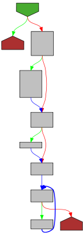
|
func (f *fmt) pad(b []byte) {
if !f.widPresent || f.wid == 0 {
f.buf.write(b)
return
}
width := f.wid - utf8.RuneCount(b)
if !f.minus {
// left padding
f.writePadding(width)
f.buf.write(b)
} else {
// right padding
f.buf.write(b)
f.writePadding(width)
}
}
// padString appends s to f.buf, padded on left (!f.minus) or right (f.minus).
|
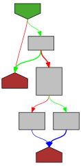
|
func (f *fmt) padString(s string) {
if !f.widPresent || f.wid == 0 {
f.buf.writeString(s)
return
}
width := f.wid - utf8.RuneCountInString(s)
if !f.minus {
// left padding
f.writePadding(width)
f.buf.writeString(s)
} else {
// right padding
f.buf.writeString(s)
f.writePadding(width)
}
}
// fmtBoolean formats a boolean.
|
|
func (f *fmt) fmtBoolean(v bool) {
if v {
f.padString("true")
} else {
f.padString("false")
}
}
// fmtUnicode formats a uint64 as "U+0078" or with f.sharp set as "U+0078 'x'".
|
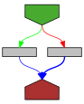
|
func (f *fmt) fmtUnicode(u uint64) {
buf := f.intbuf[0:]
// With default precision set the maximum needed buf length is 18
// for formatting -1 with %#U ("U+FFFFFFFFFFFFFFFF") which fits
// into the already allocated intbuf with a capacity of 68 bytes.
prec := 4
if f.precPresent && f.prec > 4 {
prec = f.prec
// Compute space needed for "U+" , number, " '", character, "'".
width := 2 + prec + 2 + utf8.UTFMax + 1
if width > len(buf) {
buf = make([]byte, width)
}
}
// Format into buf, ending at buf[i]. Formatting numbers is easier right-to-left.
i := len(buf)
// For %#U we want to add a space and a quoted character at the end of the buffer.
if f.sharp && u <= utf8.MaxRune && strconv.IsPrint(rune(u)) {
i--
buf[i] = '\''
i -= utf8.RuneLen(rune(u))
utf8.EncodeRune(buf[i:], rune(u))
i--
buf[i] = '\''
i--
buf[i] = ' '
}
// Format the Unicode code point u as a hexadecimal number.
for u >= 16 {
i--
buf[i] = udigits[u&0xF]
prec--
u >>= 4
}
i--
buf[i] = udigits[u]
prec--
// Add zeros in front of the number until requested precision is reached.
for prec > 0 {
i--
buf[i] = '0'
prec--
}
// Add a leading "U+".
i--
buf[i] = '+'
i--
buf[i] = 'U'
oldZero := f.zero
f.zero = false
f.pad(buf[i:])
f.zero = oldZero
}
// fmtInteger formats signed and unsigned integers.
|
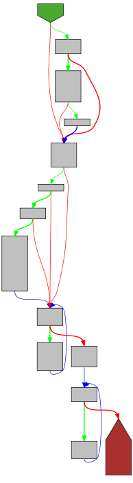
|
func (f *fmt) fmtInteger(u uint64, base int, isSigned bool, verb rune, digits string) {
negative := isSigned && int64(u) < 0
if negative {
u = -u
}
buf := f.intbuf[0:]
// The already allocated f.intbuf with a capacity of 68 bytes
// is large enough for integer formatting when no precision or width is set.
if f.widPresent || f.precPresent {
// Account 3 extra bytes for possible addition of a sign and "0x".
width := 3 + f.wid + f.prec // wid and prec are always positive.
if width > len(buf) {
// We're going to need a bigger boat.
buf = make([]byte, width)
}
}
// Two ways to ask for extra leading zero digits: %.3d or %03d.
// If both are specified the f.zero flag is ignored and
// padding with spaces is used instead.
prec := 0
if f.precPresent {
prec = f.prec
// Precision of 0 and value of 0 means "print nothing" but padding.
if prec == 0 && u == 0 {
oldZero := f.zero
f.zero = false
f.writePadding(f.wid)
f.zero = oldZero
return
}
} else if f.zero && f.widPresent {
prec = f.wid
if negative || f.plus || f.space {
prec-- // leave room for sign
}
}
// Because printing is easier right-to-left: format u into buf, ending at buf[i].
// We could make things marginally faster by splitting the 32-bit case out
// into a separate block but it's not worth the duplication, so u has 64 bits.
i := len(buf)
// Use constants for the division and modulo for more efficient code.
// Switch cases ordered by popularity.
switch base {
case 10:
for u >= 10 {
i--
next := u / 10
buf[i] = byte('0' + u - next*10)
u = next
}
case 16:
for u >= 16 {
i--
buf[i] = digits[u&0xF]
u >>= 4
}
case 8:
for u >= 8 {
i--
buf[i] = byte('0' + u&7)
u >>= 3
}
case 2:
for u >= 2 {
i--
buf[i] = byte('0' + u&1)
u >>= 1
}
default:
panic("fmt: unknown base; can't happen")
}
i--
buf[i] = digits[u]
for i > 0 && prec > len(buf)-i {
i--
buf[i] = '0'
}
// Various prefixes: 0x, -, etc.
if f.sharp {
switch base {
case 2:
// Add a leading 0b.
i--
buf[i] = 'b'
i--
buf[i] = '0'
case 8:
if buf[i] != '0' {
i--
buf[i] = '0'
}
case 16:
// Add a leading 0x or 0X.
i--
buf[i] = digits[16]
i--
buf[i] = '0'
}
}
if verb == 'O' {
i--
buf[i] = 'o'
i--
buf[i] = '0'
}
if negative {
i--
buf[i] = '-'
} else if f.plus {
i--
buf[i] = '+'
} else if f.space {
i--
buf[i] = ' '
}
// Left padding with zeros has already been handled like precision earlier
// or the f.zero flag is ignored due to an explicitly set precision.
oldZero := f.zero
f.zero = false
f.pad(buf[i:])
f.zero = oldZero
}
// truncateString truncates the string s to the specified precision, if present.
|
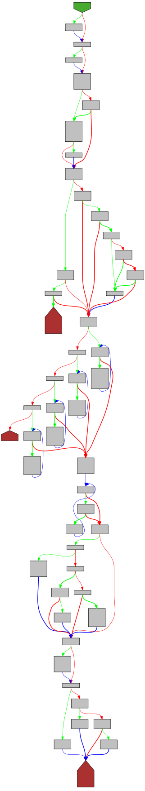
|
func (f *fmt) truncateString(s string) string {
if f.precPresent {
n := f.prec
for i := range s {
n--
if n < 0 {
return s[:i]
}
}
}
return s
}
// truncate truncates the byte slice b as a string of the specified precision, if present.
|
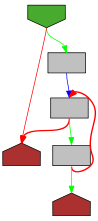
|
func (f *fmt) truncate(b []byte) []byte {
if f.precPresent {
n := f.prec
for i := 0; i < len(b); {
n--
if n < 0 {
return b[:i]
}
wid := 1
if b[i] >= utf8.RuneSelf {
_, wid = utf8.DecodeRune(b[i:])
}
i += wid
}
}
return b
}
// fmtS formats a string.
|
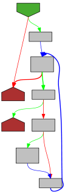
|
func (f *fmt) fmtS(s string) {
s = f.truncateString(s)
f.padString(s)
}
// fmtBs formats the byte slice b as if it was formatted as string with fmtS.
|

|
func (f *fmt) fmtBs(b []byte) {
b = f.truncate(b)
f.pad(b)
}
// fmtSbx formats a string or byte slice as a hexadecimal encoding of its bytes.
|
|
func (f *fmt) fmtSbx(s string, b []byte, digits string) {
length := len(b)
if b == nil {
// No byte slice present. Assume string s should be encoded.
length = len(s)
}
// Set length to not process more bytes than the precision demands.
if f.precPresent && f.prec < length {
length = f.prec
}
// Compute width of the encoding taking into account the f.sharp and f.space flag.
width := 2 * length
if width > 0 {
if f.space {
// Each element encoded by two hexadecimals will get a leading 0x or 0X.
if f.sharp {
width *= 2
}
// Elements will be separated by a space.
width += length - 1
} else if f.sharp {
// Only a leading 0x or 0X will be added for the whole string.
width += 2
}
} else { // The byte slice or string that should be encoded is empty.
if f.widPresent {
f.writePadding(f.wid)
}
return
}
// Handle padding to the left.
if f.widPresent && f.wid > width && !f.minus {
f.writePadding(f.wid - width)
}
// Write the encoding directly into the output buffer.
buf := *f.buf
if f.sharp {
// Add leading 0x or 0X.
buf = append(buf, '0', digits[16])
}
var c byte
for i := 0; i < length; i++ {
if f.space && i > 0 {
// Separate elements with a space.
buf = append(buf, ' ')
if f.sharp {
// Add leading 0x or 0X for each element.
buf = append(buf, '0', digits[16])
}
}
if b != nil {
c = b[i] // Take a byte from the input byte slice.
} else {
c = s[i] // Take a byte from the input string.
}
// Encode each byte as two hexadecimal digits.
buf = append(buf, digits[c>>4], digits[c&0xF])
}
*f.buf = buf
// Handle padding to the right.
if f.widPresent && f.wid > width && f.minus {
f.writePadding(f.wid - width)
}
}
// fmtSx formats a string as a hexadecimal encoding of its bytes.
|
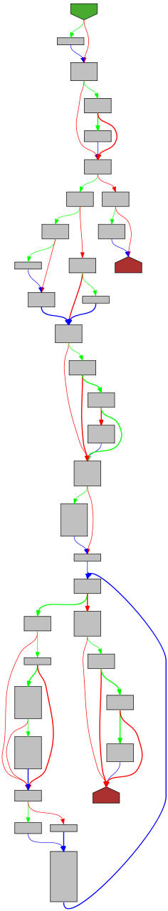
|
func (f *fmt) fmtSx(s, digits string) {
f.fmtSbx(s, nil, digits)
}
// fmtBx formats a byte slice as a hexadecimal encoding of its bytes.
|

|
func (f *fmt) fmtBx(b []byte, digits string) {
f.fmtSbx("", b, digits)
}
// fmtQ formats a string as a double-quoted, escaped Go string constant.
// If f.sharp is set a raw (backquoted) string may be returned instead
// if the string does not contain any control characters other than tab.
|

|
func (f *fmt) fmtQ(s string) {
s = f.truncateString(s)
if f.sharp && strconv.CanBackquote(s) {
f.padString("`" + s + "`")
return
}
buf := f.intbuf[:0]
if f.plus {
f.pad(strconv.AppendQuoteToASCII(buf, s))
} else {
f.pad(strconv.AppendQuote(buf, s))
}
}
// fmtC formats an integer as a Unicode character.
// If the character is not valid Unicode, it will print '\ufffd'.
|
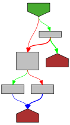
|
func (f *fmt) fmtC(c uint64) {
r := rune(c)
if c > utf8.MaxRune {
r = utf8.RuneError
}
buf := f.intbuf[:0]
w := utf8.EncodeRune(buf[:utf8.UTFMax], r)
f.pad(buf[:w])
}
// fmtQc formats an integer as a single-quoted, escaped Go character constant.
// If the character is not valid Unicode, it will print '\ufffd'.
|
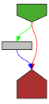
|
func (f *fmt) fmtQc(c uint64) {
r := rune(c)
if c > utf8.MaxRune {
r = utf8.RuneError
}
buf := f.intbuf[:0]
if f.plus {
f.pad(strconv.AppendQuoteRuneToASCII(buf, r))
} else {
f.pad(strconv.AppendQuoteRune(buf, r))
}
}
// fmtFloat formats a float64. It assumes that verb is a valid format specifier
// for strconv.AppendFloat and therefore fits into a byte.
|
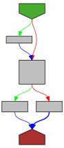
|
func (f *fmt) fmtFloat(v float64, size int, verb rune, prec int) {
// Explicit precision in format specifier overrules default precision.
if f.precPresent {
prec = f.prec
}
// Format number, reserving space for leading + sign if needed.
num := strconv.AppendFloat(f.intbuf[:1], v, byte(verb), prec, size)
if num[1] == '-' || num[1] == '+' {
num = num[1:]
} else {
num[0] = '+'
}
// f.space means to add a leading space instead of a "+" sign unless
// the sign is explicitly asked for by f.plus.
if f.space && num[0] == '+' && !f.plus {
num[0] = ' '
}
// Special handling for infinities and NaN,
// which don't look like a number so shouldn't be padded with zeros.
if num[1] == 'I' || num[1] == 'N' {
oldZero := f.zero
f.zero = false
// Remove sign before NaN if not asked for.
if num[1] == 'N' && !f.space && !f.plus {
num = num[1:]
}
f.pad(num)
f.zero = oldZero
return
}
// The sharp flag forces printing a decimal point for non-binary formats
// and retains trailing zeros, which we may need to restore.
if f.sharp && verb != 'b' {
digits := 0
switch verb {
case 'v', 'g', 'G', 'x':
digits = prec
// If no precision is set explicitly use a precision of 6.
if digits == -1 {
digits = 6
}
}
// Buffer pre-allocated with enough room for
// exponent notations of the form "e+123" or "p-1023".
var tailBuf [6]byte
tail := tailBuf[:0]
hasDecimalPoint := false
sawNonzeroDigit := false
// Starting from i = 1 to skip sign at num[0].
for i := 1; i < len(num); i++ {
switch num[i] {
case '.':
hasDecimalPoint = true
case 'p', 'P':
tail = append(tail, num[i:]...)
num = num[:i]
case 'e', 'E':
if verb != 'x' && verb != 'X' {
tail = append(tail, num[i:]...)
num = num[:i]
break
}
fallthrough
default:
if num[i] != '0' {
sawNonzeroDigit = true
}
// Count significant digits after the first non-zero digit.
if sawNonzeroDigit {
digits--
}
}
}
if !hasDecimalPoint {
// Leading digit 0 should contribute once to digits.
if len(num) == 2 && num[1] == '0' {
digits--
}
num = append(num, '.')
}
for digits > 0 {
num = append(num, '0')
digits--
}
num = append(num, tail...)
}
// We want a sign if asked for and if the sign is not positive.
if f.plus || num[0] != '+' {
// If we're zero padding to the left we want the sign before the leading zeros.
// Achieve this by writing the sign out and then padding the unsigned number.
if f.zero && f.widPresent && f.wid > len(num) {
f.buf.writeByte(num[0])
f.writePadding(f.wid - len(num))
f.buf.write(num[1:])
return
}
f.pad(num)
return
}
// No sign to show and the number is positive; just print the unsigned number.
f.pad(num[1:])
}
|
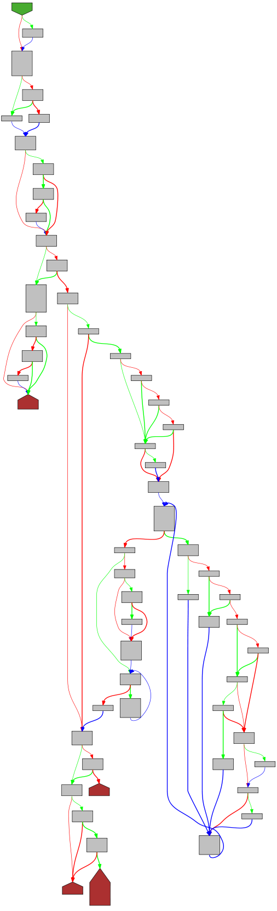
|